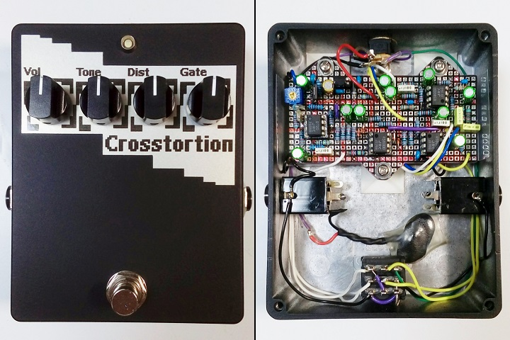
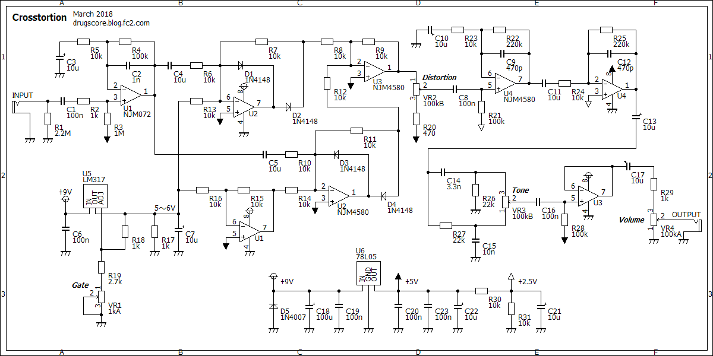
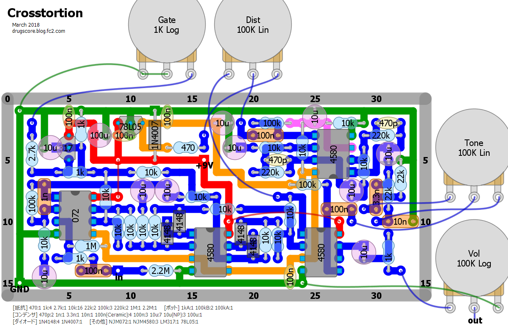
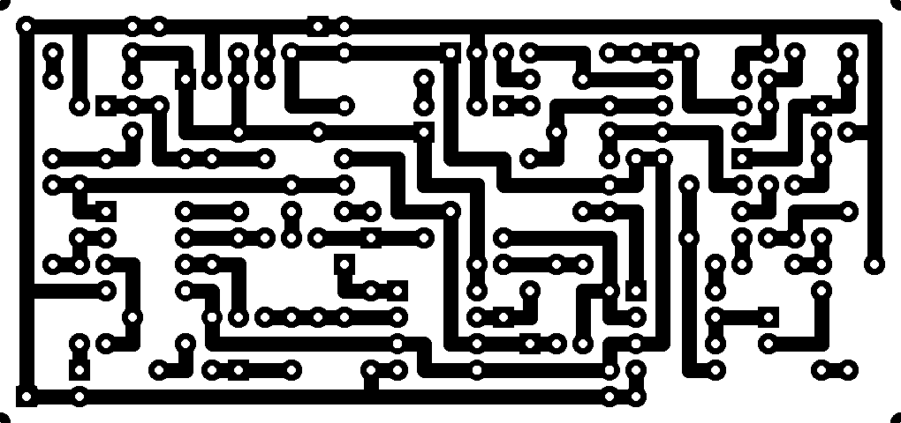

Crosstortion
2018年03月03日 カテゴリー：自作エフェクター（アナログ）

東京エフェクター「第5回 エフェクタービルダーズ・コンテスト」に向けて製作したエフェクターです。コンテストのテーマは「ハイゲイン」だったのですが、ちょうど回路を考えていた2017年10月頃はBig Muffに注目が集まっていたので、なんとなくBig Muffをベースにすることにしました。また、今回は今までやったことがなかった「クロスオーバー歪み」をコントロールしています。ペダル名は単にcrossover distortionを略したものです。
ルックスもコンテストでは重要となりますが、私にはセンスがないので評価は低いでしょう。ポット周りの図形のカドが目盛りになっているというのをやってみたかったので、角ばったデザインにしました。それと、ウケがいいかもしれないという安易な考えで、適当に黄金比を取り入れています。シールは「手作りステッカー メタリックシルバー」というものを使いました。
▽回路図

オペアンプばかりですが、ICBM（オペアンプマフ）ではありません。トーン回路や周波数特性はトランジスタを使った現行Big Muffとほとんど同じで、歪み部分は個人的に好きな「オペアンプで歪ませる」というものとなっています。参考ページ→Big Muff Pi Analysis
コンデンサは3.9nFを持ってなかったので3.3nFにしたり、まとめ買いしていた10μFをやたらと使っていたり等、ある意味Electro-Harmonix精神も盛り込んでいます。
真ん中あたりの4つのオペアンプとLM317がクロスオーバー歪み関連です。こちらのページの図11と同じ回路で、理想ダイオード回路にLM317で調節した電圧を加算しています。同ページ図12のように波形の半分以上をバッサリとクリップしますが、プラス側とマイナス側を足し合わせることで擬似的にクロスオーバー歪みがある音を生み出しています。小音量の音はクリップする電圧値を超えられず切り捨てられるため、ノイズゲートとしても働きます。倍音については、奇数次倍音のみが出るようです（各クリッピングと倍音の記事最下部に掲載）。コンテスト用の個体は、一応トリマーを追加して最小電圧値を細かく調節しました。
あまり回路検討にかける時間がなかったので、後から見ると粗がある感じがします。入力部のICを変えれば全部5V駆動でよさそうです。あとクロスオーバー歪みを扱うなら素直にトランジスタを使う方がもっと簡単だったんじゃないかと思います。
▽レイアウト

▽PCB（横86.4mm縦40.6mm）

歪みエフェクターは筐体が大きい方が印象に残る気がするので、余裕を持ってHAMMOND 1590BBを使いました。基板は秋月電子にある角型ランドのもので、見た目はなんだかカッコイイですが少し薄い（厚さ1.2mmぐらい）です。
音についてはたぶんBig Muffっぽくなっていると思います。まぁ私は自作ラムズヘッドぐらいしかビッグマフを弾いた経験がないのでよくわかりません。倍音も測定しましたが、少し奇数次倍音が多く普通の歪みという感じでした。ハイゲインだとクリッピングの違いはあまりわからなくなると思います。肝心のクロスオーバー歪みについては、なんともいえないジュワーという感じが付加されます。ゲートファズのようなブチブチ系にもできますが、正直私はあまり好きでなかったです…
---以下2018年3月19日追記---
「第5回 エフェクタービルダーズ・コンテスト」第一次審査の点数を記載しておきます。
コンセプト：17 サウンド：16 ルックス：16 操作性：16
総合点：65 21台中11位